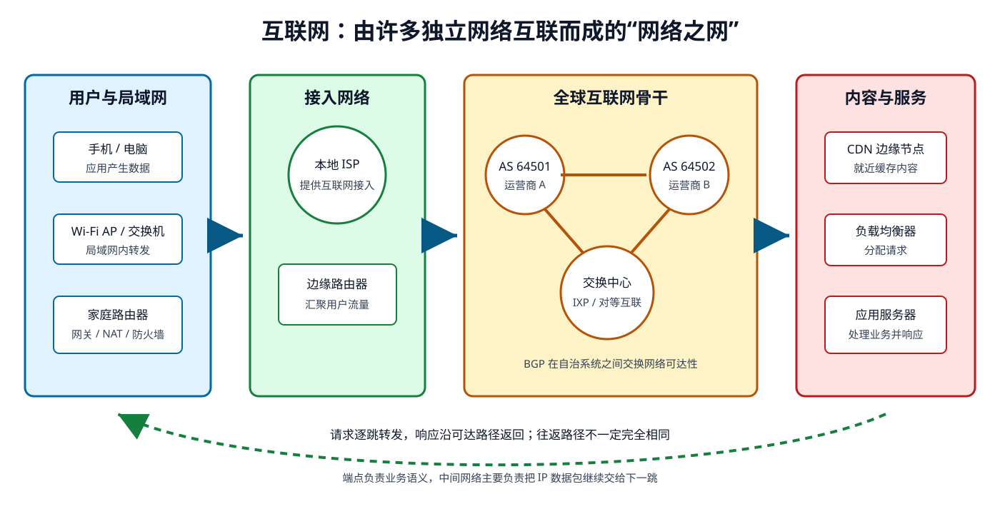
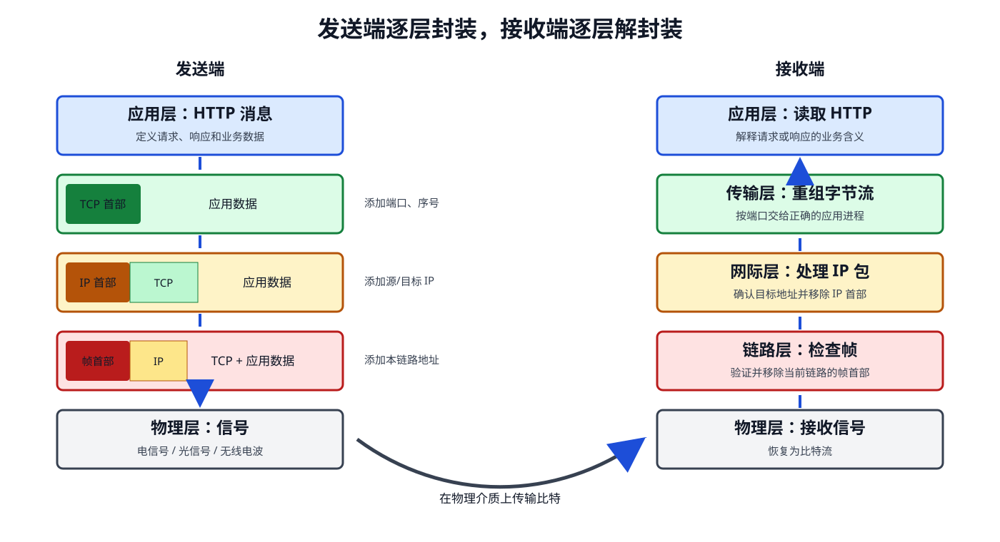
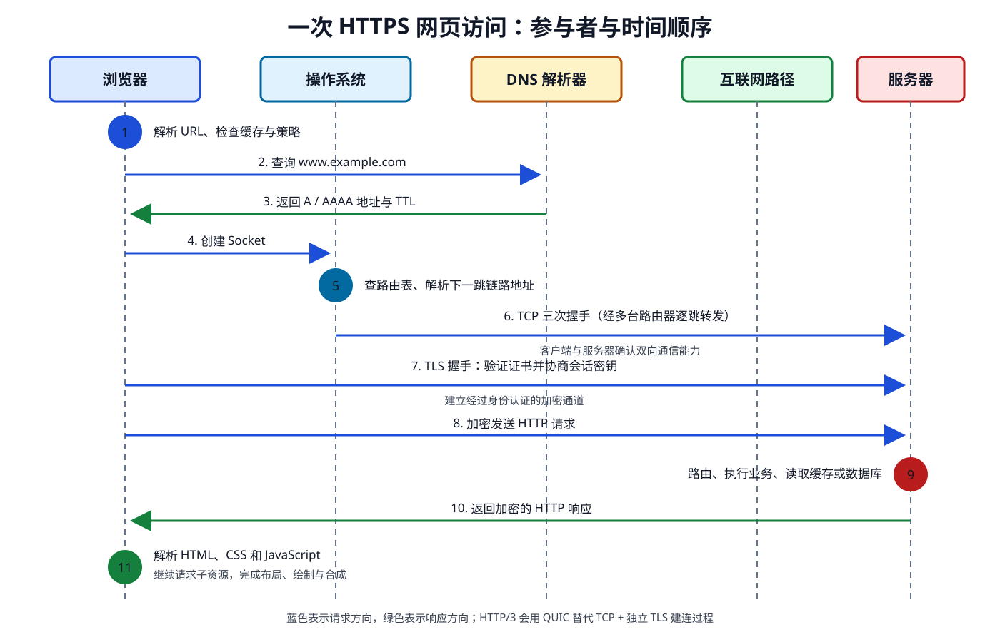
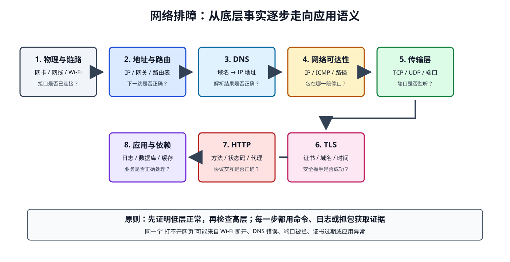

互联网是如何工作的
互联网不是一台巨大的计算机，也不只是“许多网线连在一起”。它是由无数独立网络组成的网络之网：设备遵守共同协议，把数据拆成包，经由一台台路由器转发，最终交给目标主机中的具体程序。
本文以“在浏览器输入一个网址”为主线，建立互联网的完整心智模型。读完后，你应该能解释一次网页访问经历了什么，也能对常见网络故障做初步定位。
一、先分清 Internet、Web 与网站
这三个概念经常被混用，但它们处于不同层次：
| 概念 | 英文 | 本质 | 例子 |
|---|---|---|---|
| 互联网 | Internet | 连接全球网络的基础设施与协议体系 | IP、路由器、海底光缆、运营商网络 |
| 万维网 | World Wide Web, Web | 构建在互联网之上的超文本信息系统 | HTTP、HTML、URL、浏览器 |
| 网站 | Website | Web 上由一组资源和服务组成的具体应用 | 搜索引擎、新闻站点、在线商城 |
互联网还承载电子邮件、即时通信、网络游戏、文件传输和视频会议等服务。Web 是互联网的一种应用，互联网是 Web 运行的基础。
1.1 互联网解决的核心问题
两台计算机要跨越复杂网络通信，至少要解决五个问题：
- 如何表示数据：双方必须理解相同的数据格式和协议。
- 如何找到目标：需要全球范围可路由的 IP 地址。
- 如何选择路径：中间路由器要决定数据的下一跳。
- 如何应对不可靠链路：数据可能丢失、重复、乱序或损坏。
- 如何找到目标程序：一台服务器同时运行很多服务，需要用端口区分。
这些问题由不同层次的协议协作解决，而不是由某个“互联网中心”统一处理。
二、互联网由什么组成
从家里的手机到远端服务器，一条典型路径包括：

2.1 终端设备
手机、电脑、服务器和智能设备统称为主机（Host）或端系统（End System）。真正发送和接收业务数据的是主机中的应用程序。
2.2 局域网设备
- 网卡（Network Interface Card, NIC）：把数据转换为电信号、光信号或无线电波。
- 无线接入点（Access Point, AP）：让无线终端接入局域网。
- 交换机（Switch）：在同一局域网内，依据 MAC 地址转发以太网帧。
- 家庭路由器（Home Router）：通常同时承担路由、NAT、DHCP、防火墙和 Wi-Fi AP 等职责。
2.3 互联网服务提供商
互联网服务提供商（Internet Service Provider, ISP）向家庭、企业和移动终端提供接入。不同 ISP 和大型内容提供商通过互联、对等连接或购买转接服务交换流量。
2.4 路由器与自治系统
互联网由大量自治系统（Autonomous System, AS）组成。一个 ISP、云厂商或大型企业可以运营一个或多个自治系统。自治系统内部常使用 OSPF、IS-IS 等协议，自治系统之间主要通过 BGP 交换可达性信息。
路由器并不需要知道完整业务含义。它读取目标 IP 地址，在路由表中执行最长前缀匹配，然后把数据包交给下一跳。
2.5 物理基础设施
互联网最终仍依赖真实介质：
- 家庭中的双绞线和 Wi-Fi 无线电波；
- 城域和骨干网络中的光纤；
- 连接大陆的海底光缆；
- 偏远地区使用的微波、蜂窝网络或卫星链路；
- 数据中心中的高速以太网和光互连。
“数据在云端”并不意味着它脱离了物理世界。云服务仍运行在具体机房的服务器上，数据仍要经过光纤、交换芯片和路由器。
三、四种关键标识
理解互联网，首先要分清四种地址：
| 标识 | 英文 | 回答的问题 | 典型作用范围 | 示例 |
|---|---|---|---|---|
| 域名 | Domain Name | 人如何记住服务 | 全球 DNS 命名空间 | www.example.com |
| IP 地址 | IP Address | 数据最终送到哪个网络接口 | 跨网络 | 93.184.216.34 |
| MAC 地址 | MAC Address | 当前链路上的帧交给谁 | 一个二层网络 | 00:1A:2B:3C:4D:5E |
| 端口 | Port | 主机把数据交给哪个程序 | 单台主机 | HTTPS 常用 443 |
可以用寄快递来类比：
- 域名像收件人的易记名称；
- IP 地址像建筑物地址；
- MAC 地址像当前中转站内的具体传送口；
- 端口像建筑物内的房间号。
类比只能帮助入门，不能替代准确概念。尤其要记住：
- 域名必须先经过 DNS 解析，路由器不会按域名转发普通 IP 数据包。
- MAC 地址通常每经过一台路由器就会改变，它不是全球地址。
- IP 定位网络接口，端口定位该主机中的应用程序。
- 一个 TCP 连接通常由“源 IP、源端口、目标 IP、目标端口、传输层协议”五元组标识。
四、为什么互联网采用分层设计
互联网协议栈通常用 TCP/IP 模型描述：
| 层次 | 典型协议 | 数据单位 | 核心职责 |
|---|---|---|---|
| 应用层 | HTTP、DNS、SMTP、SSH | 消息 | 定义应用怎样交换数据 |
| 传输层 | TCP、UDP、QUIC | TCP 段、UDP 数据报 | 实现进程到进程通信 |
| 网际层 | IPv4、IPv6、ICMP | IP 数据包 | 跨网络寻址和路由 |
| 链路层 | Ethernet、Wi-Fi | 帧 | 在相邻节点间交付数据 |
| 物理层 | 双绞线、光纤、无线电 | 比特、符号 | 把比特转换为可传播信号 |
分层带来的价值是关注点分离：
- 浏览器只需按 HTTP 组织请求，不必了解光纤如何传输光信号。
- TCP 可以运行在以太网、Wi-Fi 或蜂窝网络之上。
- 路由器可以转发 IP 数据包，不必理解它承载的是网页还是游戏数据。
- 下层技术变化时，上层应用通常不需要重写。
4.1 封装与解封装
发送端会逐层添加控制信息，接收端再反向去除：

以 HTTPS 请求为例：
HTTP 消息
↓ TLS 加密
TLS 记录
↓ TCP 添加端口、序号等信息
TCP 段
↓ IP 添加源地址、目标地址、TTL 等信息
IP 数据包
↓ 以太网添加源 MAC、下一跳 MAC 等信息
以太网帧
↓ 网卡编码
电信号、光信号或无线电波
这种“上层数据成为下层载荷”的过程称为封装（Encapsulation）。接收端按相反顺序处理，称为解封装（Decapsulation）。
五、输入网址后发生了什么
假设用户访问：
https://www.example.com/products?id=42
浏览器会经历下面的关键步骤：

第 1 步：解析 URL
浏览器把 URL 拆成多个部分：
| 部分 | 内容 | 含义 |
|---|---|---|
| Scheme | https |
使用 HTTPS |
| Host | www.example.com |
目标主机名 |
| Port | 省略 | HTTPS 默认使用 443 |
| Path | /products |
请求的资源路径 |
| Query | id=42 |
附加查询参数 |
浏览器还可能执行 HSTS 升级、缓存检查、代理选择和 Service Worker 拦截等操作。
第 2 步：通过 DNS 查询 IP 地址
网络传输需要 IP 地址，所以系统会尝试把域名解析为 IPv4 的 A 记录或 IPv6 的 AAAA 记录。
典型查找顺序如下：
- 浏览器 DNS 缓存；
- 操作系统缓存和
hosts文件； - 本机配置的递归 DNS 解析器；
- 递归解析器的缓存；
- 根 DNS、顶级域 DNS 和权威 DNS。
根 DNS 通常不会直接返回网站地址，而是指引解析器找到顶级域服务器；顶级域服务器再指引它找到权威服务器。查询结果可以按 TTL 缓存，因此 DNS 修改不会瞬间在全球生效。
延伸阅读：DNS
第 3 步：确定下一跳
操作系统根据目标 IP 查询路由表：
- 目标与本机处于同一子网：直接发送给目标主机。
- 目标位于其他网络：先发送给默认网关。
对于 IPv4，主机通常用 ARP 查询下一跳 IP 对应的 MAC 地址；IPv6 使用 NDP。这里查询的是下一跳的链路层地址，不是远端服务器的 MAC 地址。
第 4 步：建立传输连接
传统 HTTPS 常先建立 TCP 连接。TCP 三次握手可简化为：
客户端 -- SYN --> 服务器
客户端 <-- SYN + ACK -- 服务器
客户端 -- ACK --> 服务器
三次握手让双方确认双向通信能力，并协商初始序号和部分连接参数。
TCP 通过序号、确认、校验、重传、接收窗口和拥塞控制，向应用提供有序、可靠的字节流。但“TCP 传输成功”只表示字节到达对方协议栈，不表示业务一定处理成功。
HTTP/3 使用 QUIC。QUIC 构建在 UDP 之上，把可靠传输、拥塞控制和 TLS 1.3 等能力组合在用户态协议中，并减少队头阻塞。
第 5 步：建立 TLS 安全通道
HTTPS 中的 TLS 主要解决三个问题：
- 身份认证：证书帮助客户端确认服务器身份。
- 机密性：加密防止路径上的观察者直接读取内容。
- 完整性：验证数据是否被篡改。
在 TLS 握手中，客户端和服务器协商协议参数与密钥，服务器发送证书链。浏览器会检查域名、有效期、签名以及信任链。
HTTPS 不代表网站业务一定可信，也不隐藏所有元数据。通信双方的 IP 地址通常仍然可见。
第 6 步：发送 HTTP 请求
连接建立后，浏览器发送类似请求：
GET /products?id=42 HTTP/1.1
Host: www.example.com
Accept: text/html
User-Agent: ...
HTTP 定义请求方法、头字段、状态码和消息语义。它不负责决定数据走哪条物理链路。
第 7 步：数据逐层封装并离开主机
操作系统把数据交给协议栈，网卡最终把帧编码为信号。数据可能经过：
终端 → Wi-Fi AP/交换机 → 家庭路由器 → ISP → 多个骨干路由器
→ CDN/数据中心边缘 → 负载均衡器 → Web 服务器
每台路由器主要执行：
- 接收并去除入站链路层封装；
- 读取目标 IP；
- 将 TTL 或 Hop Limit 减一；
- 查询路由表选择出接口和下一跳；
- 重新添加当前链路所需的帧头；
- 把数据发送给下一跳。
IP 地址在理想端到端路径上通常保持不变，MAC 地址则会随每段链路改变。NAT、代理或隧道可能改写或封装地址。
第 8 步：请求到达服务器端系统
真实网站通常不是由一台服务器直接承接全部流量。请求可能依次经过：
- CDN：在靠近用户的位置缓存静态资源；
- 防火墙或 WAF：过滤不符合安全策略的流量；
- 负载均衡器：把请求分发给健康实例；
- 反向代理：终止 TLS、路由请求或执行缓存；
- 应用服务器：运行具体业务逻辑；
- 数据库与缓存：读取或写入业务数据。
“访问一台服务器”常常只是外部视角。服务器内部可能是一个分布式系统。
第 9 步：服务器返回 HTTP 响应
服务器处理完成后返回状态码、响应头和内容：
HTTP/1.1 200 OK
Content-Type: text/html; charset=utf-8
Cache-Control: max-age=300
<!doctype html>
...
常见状态码：
| 范围 | 含义 | 示例 |
|---|---|---|
1xx |
信息性响应 | 100 Continue |
2xx |
请求成功 | 200 OK、204 No Content |
3xx |
重定向或缓存 | 301 Moved Permanently、304 Not Modified |
4xx |
客户端请求问题 | 400 Bad Request、404 Not Found |
5xx |
服务端处理问题 | 500 Internal Server Error、503 Service Unavailable |
第 10 步：浏览器解析并渲染页面
浏览器拿到 HTML 后还要：
- 解析 HTML，构建 DOM；
- 解析 CSS，构建 CSSOM；
- 执行 JavaScript；
- 生成渲染树；
- 完成布局、绘制和合成；
- 继续请求 CSS、JavaScript、图片、字体和接口数据。
因此，看到页面不只依赖“下载一个 HTML 文件”。一个页面通常会触发几十甚至数百个资源请求。
六、数据为什么要拆成包
如果一段大数据独占链路直到传输完成，其他通信就要长时间等待。互联网采用分组交换（Packet Switching）：
- 大数据被拆成多个较小的数据单元；
- 每个 IP 包可被路由器独立转发；
- 多个用户的数据包在同一链路上交错传输；
- 接收方按协议重新组合和处理数据。
它提高了共享链路的利用率，也带来新的问题：排队、丢包、乱序和抖动。
6.1 MTU 与分片
链路层能承载的数据包大小有限。以太网常见 MTU 为 1500 字节。TCP 通常依据 MSS 控制单个 TCP 段的数据量，尽量避免 IP 分片。
包并不是越大越好：
- 包太小，首部开销占比增加；
- 包太大，可能超过路径 MTU；
- 发生分片后，任一分片丢失都会影响原数据报重组；
- 错误屏蔽必要的 ICMP 消息可能造成“短请求正常、大请求卡住”。
七、TCP、UDP 与 QUIC 怎样选择
| 协议 | 连接模型 | 可靠性 | 典型特点 | 常见场景 |
|---|---|---|---|---|
| TCP | 面向连接 | 内置可靠、有序字节流 | 生态成熟，内核实现广泛 | HTTP/1.1、HTTP/2、数据库 |
| UDP | 无连接 | 不保证交付、顺序或去重 | 首部简单，应用可自定义策略 | DNS、音视频、游戏 |
| QUIC | 基于 UDP 建立安全连接 | 内置可靠流与拥塞控制 | 集成 TLS 1.3，支持连接迁移 | HTTP/3 |
UDP 并不等于“低延迟”，TCP 也不等于“一定慢”。真实表现取决于往返时延、丢包率、拥塞算法、应用交互方式和实现质量。
八、互联网为什么可能很慢
8.1 四类时延
单个数据包经过一条链路时，常见时延包括：
| 时延 | 英文 | 含义 |
|---|---|---|
| 处理时延 | Processing Delay | 设备检查首部并做转发决定 |
| 排队时延 | Queuing Delay | 数据包等待出接口可用 |
| 传输时延 | Transmission Delay | 把所有比特推入链路所需时间 |
| 传播时延 | Propagation Delay | 信号在介质中传播所需时间 |
总体验还会受到 DNS、TCP/QUIC 建连、TLS 握手、服务端计算、资源数量和浏览器渲染影响。
8.2 带宽不等于速度体验
- 带宽（Bandwidth）表示单位时间可传输的数据量上限。
- 时延（Latency）表示一次传输需要等待多久。
- 吞吐量（Throughput）表示应用实际获得的传输速率。
- 抖动（Jitter）表示时延随时间的波动。
- 丢包率（Packet Loss Rate）表示未成功交付的数据包比例。
高带宽不一定低时延。跨洲链路即使带宽很高，也绕不开传播距离；页面由大量串行请求组成时，往返时延往往比文件大小更影响体验。
九、安全与可靠性不是同一件事
互联网底层默认面对一个不完全可信的环境：
- 数据包可能被监听、篡改或伪造；
- 路由可能故障或变化；
- 主机可能被攻击；
- 服务可能过载；
- DNS 结果可能被污染；
- 证书可能配置错误。
不同机制解决不同问题：
| 机制 | 主要解决的问题 | 不能保证什么 |
|---|---|---|
| TCP | 有序、可靠地传输字节 | 数据内容保密、业务处理成功 |
| TLS | 身份、机密性、完整性 | 网站业务诚实、服务器无漏洞 |
| DNSSEC | 验证 DNS 数据来源与完整性 | DNS 查询内容保密 |
| DoH/DoT | 加密客户端到解析器的 DNS 查询 | 权威数据一定正确 |
| 防火墙 | 按策略允许或阻止流量 | 应用逻辑没有漏洞 |
| CDN | 就近服务、缓存和流量吸收 | 源站永不故障 |
理解“每个机制具体保证什么”比记住“它更安全”更重要。
十、如何系统定位网络故障
不要从“网络坏了”开始猜。应沿通信链路逐层验证：

10.1 推荐排查顺序
- 物理与链路：网线、Wi-Fi、网卡状态是否正常？
- 地址配置：是否获得正确 IP、前缀、网关和 DNS？
- 本地路由：操作系统是否选择了正确出接口和下一跳？
- DNS：域名能否解析，结果是否符合预期？
- 网络可达性：目标 IP 和沿途路由是否可达？
- 传输层：目标端口是否开放，TCP 是否重传或被重置？
- TLS：证书、域名、时间和协议版本是否正确？
- HTTP 与应用：状态码、代理、日志和依赖服务是否正常？
10.2 常用命令
macOS/Linux：
# 查看地址与接口
ifconfig
# 查看路由表
netstat -rn
# 查询 DNS
dig www.example.com
# 检查基本可达性
ping -c 4 1.1.1.1
# 观察途经路由
traceroute www.example.com
# 查看 HTTPS 建连、证书和响应
curl -v https://www.example.com/
# 查看某个域名的 TLS 证书链
openssl s_client -connect www.example.com:443 -servername www.example.com
10.3 从现象快速判断层次
| 现象 | 优先检查 |
|---|---|
| 没有 IP 地址 | 网卡、Wi-Fi、DHCP、VLAN |
| 能访问 IP，不能访问域名 | DNS |
ping 通但端口不通 |
服务监听、防火墙、ACL |
| TCP 端口通但 HTTPS 报错 | TLS 证书、系统时间、SNI |
| 小请求正常，大请求卡住 | MTU、MSS、ICMP |
| 下载速度慢且有重传 | 丢包、拥塞、无线干扰 |
| 首字节很慢但下载很快 | 服务端处理、连接建立、跨区 RTT |
某个 traceroute 节点不响应但业务正常 |
节点未返回或限速 ICMP |
ping不通不等于网站一定不通。对方可能屏蔽 ICMP，但仍允许 TCP443。
十一、常见误区
-
“互联网就是 Web。”
Web 只是运行在互联网之上的一种应用。 -
“DNS 负责把数据送到服务器。”
DNS 主要把名称解析成地址，真正转发数据的是 IP 网络和路由器。 -
“交换机和路由器是一回事。”
入门模型中，交换机主要在局域网按 MAC 转发，路由器主要在不同 IP 网络间转发。 -
“数据沿固定路径往返。”
互联网路由会随策略和故障变化，请求与响应甚至可能走不同路径。 -
“服务器的 MAC 地址会一路传到客户端。”
MAC 地址只服务于当前链路，经过路由器后会重新封装。 -
“TCP 确认就代表订单已成功。”
TCP 只确认字节交付，业务成功必须由应用层响应或事务状态确认。 -
“HTTPS 代表网站绝对安全。”
HTTPS 保护传输通道，不保证业务可信，也不能消除应用漏洞。 -
“带宽越大，所有请求越快。”
小请求和交互式应用经常更受 RTT、排队和服务端耗时影响。 -
“UDP 一定比 TCP 快。”
UDP 只是不内置可靠传输；应用若需要可靠性，仍要自行承担相应成本。 -
“互联网由一个中心统一控制。”
互联网是多个独立网络按共同协议互联形成的分布式系统。
十二、术语中英文对照
| 中文名称 | 英文名称 | 缩写 | 简要说明 |
|---|---|---|---|
| 互联网 | Internet | - | 互联网络组成的全球通信系统 |
| 万维网 | World Wide Web | WWW/Web | 基于超文本与 HTTP 的信息系统 |
| 互联网协议 | Internet Protocol | IP | 跨网络寻址与转发数据包 |
| 互联网服务提供商 | Internet Service Provider | ISP | 提供互联网接入和传输服务 |
| 自治系统 | Autonomous System | AS | 由统一路由策略管理的一组网络 |
| 域名系统 | Domain Name System | DNS | 将域名解析为 IP 等资源记录 |
| 动态主机配置协议 | Dynamic Host Configuration Protocol | DHCP | 自动分配网络参数 |
| 地址解析协议 | Address Resolution Protocol | ARP | 在 IPv4 局域网查询 IP 对应的 MAC |
| 网络地址转换 | Network Address Translation | NAT | 转换网络地址，常用于私网访问公网 |
| 传输控制协议 | Transmission Control Protocol | TCP | 提供可靠、有序的字节流 |
| 用户数据报协议 | User Datagram Protocol | UDP | 提供轻量、无连接的数据报传输 |
| 快速 UDP 互联网连接 | Quick UDP Internet Connections | QUIC | 基于 UDP 的安全多路传输协议 |
| 超文本传输协议 | Hypertext Transfer Protocol | HTTP | 定义 Web 请求与响应语义 |
| 传输层安全协议 | Transport Layer Security | TLS | 提供身份认证、加密和完整性保护 |
| 往返时延 | Round-Trip Time | RTT | 数据往返通信双方所需时间 |
| 最大传输单元 | Maximum Transmission Unit | MTU | 链路可承载的最大网络层数据包大小 |
| 内容分发网络 | Content Delivery Network | CDN | 就近缓存和分发内容的网络 |
十三、动手实验：观察一次真实请求
选择一个你能正常访问的网站，按顺序执行：
# 1. 域名解析到了哪些地址？
dig example.com
# 2. 操作系统准备怎样转发数据？
route -n get 93.184.216.34
# 3. 中间大致经过哪些路由节点？
traceroute example.com
# 4. HTTPS 请求各阶段发生了什么？
curl -v https://example.com/
# 5. 分别统计 DNS、建连、TLS、首字节和总耗时
curl -o /dev/null -s \
-w 'DNS: %{time_namelookup}s\nTCP: %{time_connect}s\nTLS: %{time_appconnect}s\nTTFB: %{time_starttransfer}s\nTotal: %{time_total}s\n' \
https://example.com/
观察时回答：
- DNS 返回了 IPv4、IPv6，还是两者都有？
- 默认网关是谁？目标是否在本地子网？
- 哪些阶段需要一个或多个 RTT？
- 首字节时间与总下载时间哪个更长？这意味着什么？
- 若更换网络，路由和各阶段耗时是否变化？
十四、复习题
- 为什么知道域名还不能直接发送 IP 数据包？
- 为什么访问远端服务器时，客户端通常只需要知道默认网关的 MAC 地址？
- TCP 的可靠性与业务操作成功有什么区别？
- HTTPS 分别提供了哪三类核心保护？
- 为什么增加带宽不一定显著降低网页首屏时间？
- 数据包每经过一台路由器时，哪些信息可能改变？
- 为什么
ping失败不能证明 HTTPS 服务不可用？
参考答案
1. 网络层转发需要目标 IP，域名必须先经 DNS 转换为相应资源记录。 2. 以太网帧只负责当前链路的交付；路由器会为下一段链路重新封装。 3. TCP 保证字节流交付，不保证应用已经完成事务、持久化或业务校验。 4. 身份认证、机密性和完整性。 5. 首屏可能主要受 DNS、握手 RTT、服务端处理和串行资源依赖影响。 6. 链路层地址会改变，TTL/Hop Limit 会递减；NAT、代理或隧道还可能改变或封装网络层信息。 7. ICMP 可能被屏蔽或限速，而目标仍允许 TCP `443`。十五、总结
一次网页访问可以压缩成一条清晰主线：
URL 解析
→ DNS 得到 IP
→ 路由表确定下一跳
→ ARP/NDP 得到链路地址
→ TCP 或 QUIC 建立传输通道
→ TLS 建立安全通道
→ HTTP 交换请求与响应
→ 路由器逐跳转发数据包
→ 服务器处理业务
→ 浏览器解析并渲染页面
面对任何网络问题，都可以追问五件事：
- 当前处理发生在哪一层？
- 当前设备依据哪个标识做决定？
- 下一跳是谁，最终目标又是谁？
- 这一跳会修改哪些信息？
- 失败能够通过什么现象、日志或数据包观察到？
掌握这五个问题，就不再需要把互联网当成不可理解的“黑盒”。